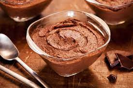

Voltar para o índice
Musse de chocolate com gelatina

Ingredientes
- 1 envelope de gelatina em pó sem sabor
- 1 lata de leite condensado
- 500 ml de leite
- 4 colheres (sopa) de chocolate em pó
- 1/2 lata de creme de leite gelada
- 1 colher (sopa) de essência de baunilha
Modo de preparo
-
Preparar a gelatina conforme as instruções do fabricante.
-
Bater no liquidificador o leite condensado com a
gelatina.
- Adicionar o restante dos ingredientes e bater por 3 minutos.
- Levar para gelar antes de servir.
Observação:
Receita originalmente zero açúcar, utilizando leite condensado e chocolate em
pó zero açúcar.